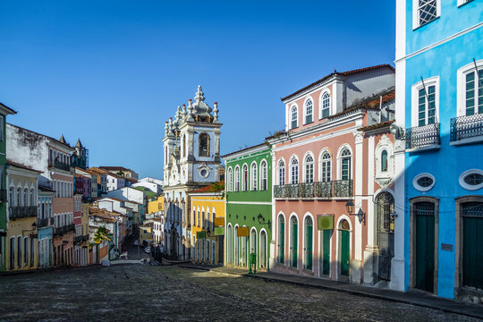

Pelourinho
Centro Histórico de Salvador e um dos locais mais famosos da Bahia. Conhecido pelas casa coloridas, ruas de pedra e igrejas antigas, o local representa a forte cultura afro-brasileira. Além da arqueitetura histórica, o Pelourinho possui apresentações musicais, restaurantes típicos e manifestações culturais durante todo o ano.